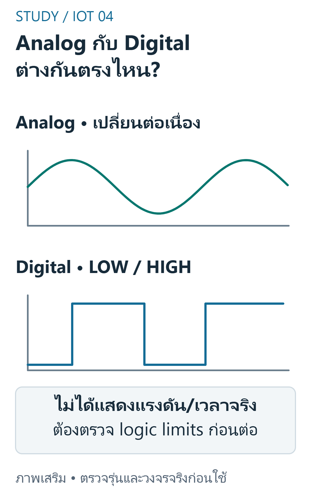
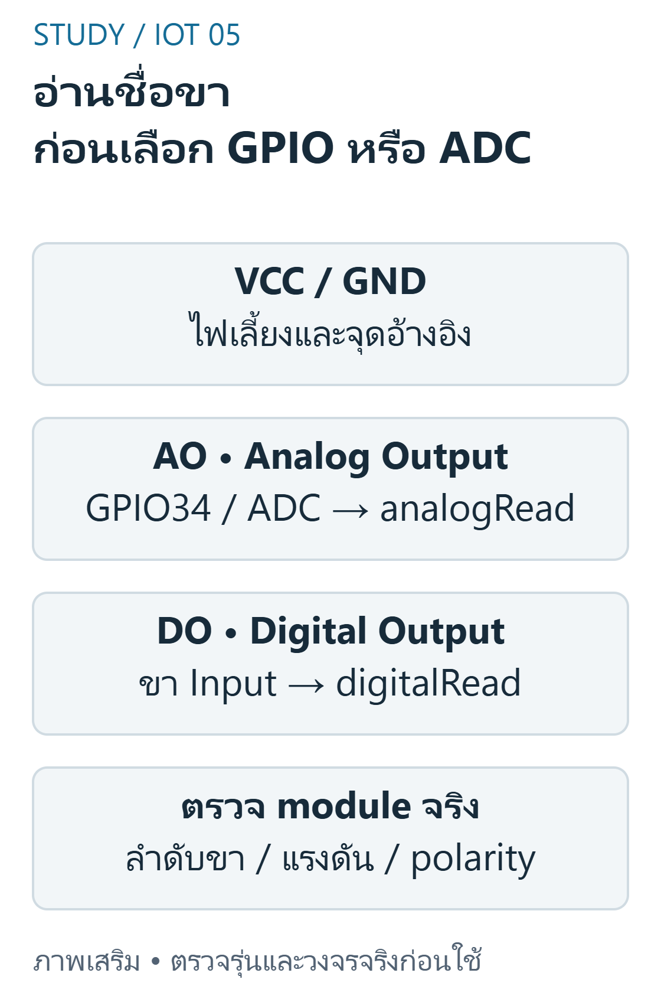
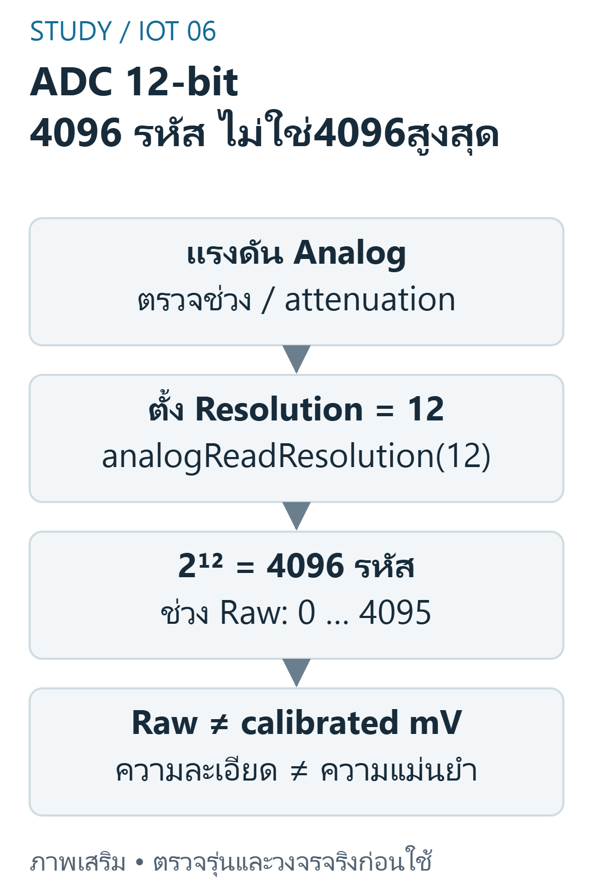

FINAL 02 — Sensors, GPIO และ ADC
เป้าหมายการเรียนรู้
- อธิบาย AO กับ DO พร้อมเลือก API และข้อจำกัด
- วางแผนอ่าน DO ที่มีระดับและ polarity ชัด
- อธิบายความต่าง raw count,resolution,voltage และ calibration
- ออกแบบ dry / wetcalibration และทดสอบช่วงนอก endpoints
- ลำดับ debug เมื่อ raw ค้าง 0 / 4095
ขอบเขต หลักฐาน และความปลอดภัย
วิชา 89022567 เลือกศึกษา Week 9–12 โดยยังไม่ยืนยันว่าเป็นขอบเขตสอบ Final ทางการทั้งหมด หลักฐานต้นฉบับ: A10 task2; A11 pp.1–3; B pp.15–16,26–27,94–98. เลขหน้า PDF หมายถึงหน้าจริงของไฟล์ (physical page); เอกสาร Word อ้างหัวข้องานและหน้าแปลงส่วนตัวตาม บัญชีแหล่งที่มา. ไม่เผยแพร่ต้นฉบับหรือข้อมูลส่วนตัวของผู้เรียน
ตัวอย่างและเฉลยต่อไปนี้จัดทำเสริม ไม่ใช่เฉลยทางการ ใช้บอร์ด classic ESP32-WROOM กับ Arduino-ESP32 core 3.3.11 เป็นเป้าหมาย ตัวเลขขา ระดับสัญญาณ (polarity) เกณฑ์ช่วง (threshold) และที่อยู่จอ OLED เป็นสมมติฐานที่ประกาศ ห้ามเหมารวมกับ ESP32 ทุกรุ่น
ใช้เฉพาะ LED หรือโหลดแรงดันต่ำผ่านโมดูล/วงจรขับที่เข้ากันได้ ห้ามขับขดลวดรีเลย์จาก GPIO โดยตรง และห้ามต่อไฟบ้านบน breadboard ตรวจ Echo 5V กับ GPIO 3.3V วงจรแปลงระดับ กราวด์ และตัวต้านทานก่อนจ่ายไฟ การคอมไพล์และการจำลองไม่พิสูจน์ความถูกต้องของวงจรหรือความแม่นยำเซนเซอร์จริง
Analog, Digital และ AO/DO
Analog output แทนปริมาณด้วยแรงดันต่อเนื่อง ส่วน digital output ให้สถานะตามเกณฑ์วงจรโมดูล AO / DO ของ soil module อาจอยู่บนบอร์ดเดียวกันแต่ใช้งานคนละแบบ AO ไป ADC, DO ไป digital input การเรียก analogRead ได้จำนวนเต็มเพราะผ่านการแปลง A / D ไม่ทำให้ input voltage เดิมกลายเป็น digital sensor

อ่านภาพ: ADC แปลงแรงดัน Analog เป็นจำนวนเต็ม ส่วน Digital input อ่านสถานะตามระดับและขีดจำกัดของอุปกรณ์ ไม่ใช่ทุกแรงดันจะแปลเป็น0หรือ1ได้อย่างปลอดภัย
ข้อควรระวัง: อย่าสับสนลักษณะสัญญาณกับชนิดตัวแปรที่รับค่าหลัง ADC
ตัวอย่างการให้เหตุผลที่จัดทำเสริม:
soil module มี AO และ DO; ต้องการแรงดันที่แปรตามการวัดควรต่อขาใดเข้า ADC?
แนวคำตอบ: AO — A11 แยก analog output กับ digital output ชัด
GPIO Modes และขาที่เลือก
pinMode(pin,INPUT) กำหนดรับข้อมูล high impedance; OUTPUT ใช้ขับ logic; INPUT_PULLUP ใช้ได้เฉพาะขาที่รองรับ GPIO34–39 ของ classic ESP32 เป็น input-only และไม่มี software pullup / pulldown ภายใน จึงไม่ใช้ GPIO34 ขับไฟหรือสมมติว่าตั้ง INPUT_PULLUP ได้

อ่านภาพ: ชื่อขาในภาพเป็นหน้าที่ ไม่ใช่ลำดับเสียบบนโมดูลจริง AO ใช้ analogRead; DO ใช้ digitalRead หลังตรวจแรงดันและ polarity
ข้อควรระวัง: INPUT ที่ไม่มี bias อาจลอยเมื่อไม่ได้ต่อสัญญาณ
ตัวอย่างการให้เหตุผลที่จัดทำเสริม:
ขาตัวอย่างใดรับ analog ได้แต่ไม่ควรใช้ขับ LED บน classic ESP32?
แนวคำตอบ: GPIO34 — GPIO34 เป็น input-only; pinout ต้องตรงรุ่น
ADC Resolution ไม่เท่ากับความแม่นยำ
ตั้ง analogReadResolution(12) ให้ raw range0..4095 อย่างชัดเจน Raw เป็นค่าที่ไม่ calibrate ไม่ใช่ millivolts โดยตรง A10 ใช้ตัวอย่าง 0..1023 แบบ 10bit จึงต้องปรับตามบอร์ด actual attenuation / input range ต่างกันและมี nonlinearity อย่าอ้างว่า 4095 หมายถึง 3.3V อย่างแม่นยำทุกการตั้งค่า

อ่านภาพ: จำนวนรหัสคือ2ยกกำลัง12=4096 แต่รหัสสูงสุด4095 ห้ามสรุป4095=3.3Vอย่างแม่นยำทุก attenuation; ตรวจ API และการปรับเทียบ
ข้อควรระวัง: ความละเอียด 12bit ไม่ใช่ใบรับรองความแม่นยำ 12bit
ตัวอย่างการให้เหตุผลที่จัดทำเสริม:
ADC12bit มีจำนวน code ทั้งหมดเท่าใด?
แนวคำตอบ: 4096 — 2^12=4096code ตั้งแต่ 0ถึง 4095
การปรับเทียบและ map
map() ของ Arduino คำนวณจำนวนเต็ม จึงอาจตัดเศษแม้เก็บผลใน float ตัวอย่างเปอร์เซ็นต์จาก endpoints เป็น normalized index เท่านั้น หากต้องการ moisture%จริงต้องมีการปรับเทียบกับวิธีอ้างอิงและรู้ว่าเปียกทำให้ raw สูงหรือต่ำ ตรวจ endpoints ไม่เท่ากัน และ clamp ตามนโยบายที่ประกาศ
ข้อควรระวัง: อย่าเรียกเปอร์เซ็นต์ที่เดาจาก raw ว่า calibrated soil moisture
ตัวอย่างการให้เหตุผลที่จัดทำเสริม:
คำนวณแบบจำนวนเต็ม: 512*100 / 1023 ได้เท่าใด?
แนวคำตอบ: 50 — ผลจำนวนเต็มตัดเศษ ไม่ได้กลายเป็น floating เพียงเพราะ assign ลง float
แรงดัน ความปลอดภัย และการตรวจปัญหา
ตรวจ VCC,GND,AO / DO,inputlimits และ sensorload ก่อนอ่าน หาก 5V Echo ต้องลดระดับใช้ divider หรือ levelshifter ที่ตรวจแล้ว ตัวอย่าง Rtop10kΩ,Rbottom15kΩให้ Vout=Vin×15/(10+15)=3.0V เมื่อ Vin5V เป็นการคำนวณอุดมคติ ต้องพิจารณา tolerance / logicthreshold และรุ่นจริง ห้ามใช้ divider จ่ายกำลังให้ relay
ข้อควรระวัง: ค่า raw0 หรือเต็มสเกลไม่ยืนยันระดับทางกายภาพโดยไม่มีการตรวจสาย
ตัวอย่างการให้เหตุผลที่จัดทำเสริม:
divider Vin=5V,Rtop10kΩ,Rbottom15kΩ ให้ Vout อุดมคติกี่ V?
แนวคำตอบ: 3 — 5×15/(10+15)=3.0V ไม่ใช่การรับรองวงจรจริง
โปรแกรม C++ ที่เขียนเสริม
สเก็ตช์ C++ นี้เขียนเสริมสำหรับเป้าหมายที่ระบุ คอมเมนต์อธิบาย API และสมมติฐาน มีการตรวจคอมไพล์จริง แต่ไม่มีการอัปโหลดหรือวัดผลฮาร์ดแวร์ ห้ามนำไปต่ออุปกรณ์ที่ยังไม่ทราบสเปกโดยตรง
#include <Arduino.h>constexpr uint8_t SOIL_PIN = 34; // A11 ใช้GPIO34; classic ESP32 input-onlyvoid setup() { Serial.begin(115200); pinMode(SOIL_PIN, INPUT); analogReadResolution(12); // บอกช่วงที่ใช้ชัดเจน ไม่คัด0..1023โดยไม่ตรวจบอร์ด}void loop() { const int raw = analogRead(SOIL_PIN); Serial.print("raw="); Serial.println(raw); // raw ไม่ใช่เปอร์เซ็นต์ความชื้น delay(1000);}อ่าน Expected Behavior และกรณีขอบ
อ่าน raw จาก GPIO34 แล้วพิมพ์ raw=... ทุกประมาณ1s ค่าจริงขึ้นกับวงจร;ไม่ติดป้าย % ก่อน calibration และไม่อ้างตัวเลขทดลองที่ยังไม่มี
- อย่าสับสนลักษณะสัญญาณกับชนิดตัวแปรที่รับค่าหลัง ADC
- INPUT ที่ไม่มี bias อาจลอยเมื่อไม่ได้ต่อสัญญาณ
- ความละเอียด 12bit ไม่ใช่ใบรับรองความแม่นยำ 12bit
- อย่าเรียกเปอร์เซ็นต์ที่เดาจาก raw ว่า calibrated soil moisture
- ค่า raw0 หรือเต็มสเกลไม่ยืนยันระดับทางกายภาพโดยไม่มีการตรวจสาย
ฝึกอธิบายพร้อมแนวประเมิน
โจทย์เหล่านี้จัดทำเสริมเพื่อทบทวน ไม่ใช่ข้อสอบมหาวิทยาลัยที่ยืนยันแล้ว โหมดฝึกและคลังข้อสอบด้านล่างแสดงคำอธิบายหลังส่งคำตอบตามระบบเดิม เมื่อปิด JavaScript ยังอ่านเฉลยในส่วนพับได้ คำอธิบายและโค้ดอิสระใช้เกณฑ์ประเมินตนเอง (rubric) ไม่ตรวจคะแนนอัตโนมัติ
1. Analog, Digital และ AO/DO
อธิบาย AO กับ DO พร้อมเลือก API และข้อจำกัด
แนวคำตอบ: AO เป็นแรงดันใช้ ADC; DO เป็น logic ต้องตรวจ polarity / level และ threshold ของโมดูล
2. GPIO Modes และขาที่เลือก
วางแผนอ่าน DO ที่มีระดับและ polarity ชัด
แนวคำตอบ: เลือกขาที่เหมาะ ระบุ pull / externalbias และ commonreference ก่อนอ่าน
3. ADC Resolution ไม่เท่ากับความแม่นยำ
อธิบายความต่าง raw count,resolution,voltage และ calibration
แนวคำตอบ: แยก fullscale / codecount / attenuation;ใช้ analogReadMilliVolts เมื่อต้องการ API ผล mV และยังตรวจ actualsensor
4. การปรับเทียบและ map
ออกแบบ dry / wetcalibration และทดสอบช่วงนอก endpoints
แนวคำตอบ: กำหนดทิศทาง,ช่วง,guardzero และ unit ก่อนแปลงข้อมูล
5. แรงดัน ความปลอดภัย และการตรวจปัญหา
ลำดับ debug เมื่อ raw ค้าง 0 / 4095
แนวคำตอบ: แยก power / ground / wiring / pin / attenuation / calibration และทดสอบแรงดันอย่างปลอดภัย
สรุปก่อนสอบ
- Analog, Digital และ AO/DO: อย่าสับสนลักษณะสัญญาณกับชนิดตัวแปรที่รับค่าหลัง ADC
- GPIO Modes และขาที่เลือก: INPUT ที่ไม่มี bias อาจลอยเมื่อไม่ได้ต่อสัญญาณ
- ADC Resolution ไม่เท่ากับความแม่นยำ: ความละเอียด 12bit ไม่ใช่ใบรับรองความแม่นยำ 12bit
- การปรับเทียบและ map: อย่าเรียกเปอร์เซ็นต์ที่เดาจาก raw ว่า calibrated soil moisture
- แรงดัน ความปลอดภัย และการตรวจปัญหา: ค่า raw0 หรือเต็มสเกลไม่ยืนยันระดับทางกายภาพโดยไม่มีการตรวจสาย
อ้างอิงและข้อจำกัด
- ต้นฉบับส่วนตัว: A10 task2; A11 pp.1–3; B pp.15–16,26–27,94–98; ไม่แนบสำเนา ไม่อ้างว่ามีsourceอื่นที่ยังไม่เปิด
- Source coverage, Academic verification, Exam verification, QA
- ESP32 datasheet — ตรวจ2026-10-29;ใช้target/core3.3.11สำหรับcompileและอย่าสมมติว่าlatestdocsตรงกับทุกcoreเก่า
- GPIO API — ตรวจ2026-10-29;ใช้target/core3.3.11สำหรับcompileและอย่าสมมติว่าlatestdocsตรงกับทุกcoreเก่า
- ADC API — ตรวจ2026-10-29;ใช้target/core3.3.11สำหรับcompileและอย่าสมมติว่าlatestdocsตรงกับทุกcoreเก่า
ข้อจำกัดที่ยังไม่ยืนยัน: แรงดัน ระดับกระตุ้น ที่อยู่ และการต่อสายของโมดูลจริง ความแม่นยำ สภาพแวดล้อม และวิดีโอทดลอง การตรวจเว็บ/คอมไพล์/จำลองไม่เท่ากับผ่านการทดสอบฮาร์ดแวร์ และไม่ยืนยันขอบเขตข้อสอบจริง